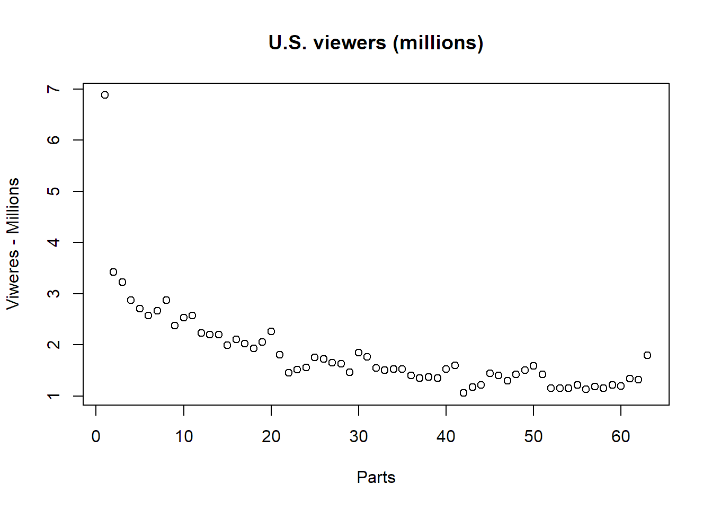
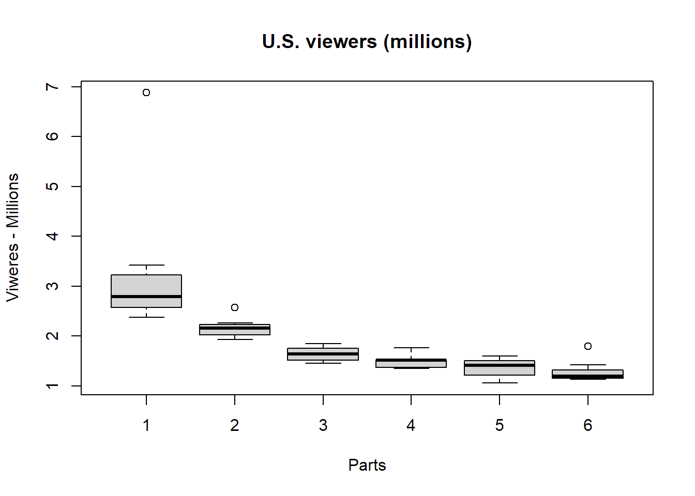

```{r}
setwd("C:/Users/Windows/RRcourse2023/Quarto_Exercise_2/")
```Quarto
1 Summary of Better Call Saul
Better Call Saul is an American television drama series created by Vince Gilligan and Peter Gould, which premiered in 2015 on AMC. It is a spin-off and prequel to Gilligan’s previous series, Breaking Bad (2008-2013). Set primarily in the first half of the 2000s in Albuquerque, New Mexico, the series develops Jimmy McGill (Bob Odenkirk), an earnest lawyer and former con artist, into an egocentric criminal defense attorney known as Saul Goodman. Also shown is the moral decline of former police officer Mike Ehrmantraut (Jonathan Banks), who becomes a violent fixer for drug traffickers to support his granddaughter and her widowed mother.
Over the course of the series, 63 episodes aired over six seasons. The series premiere aired on February 8, 2015, and the series finale aired on August 15, 2022.[1][2]
2 Informations
- Crime drama
- Serial drama
- Thriller[1]
- Neo-Western[2][3]
- Black comedy[4]
- Tragedy[5][6]
- Bryan Cranston
- Anna Gunn
- Aaron Paul
- Dean Norris
- Betsy Brandt
- RJ Mitte
- Giancarlo Esposito
- Bob Odenkirk
- Jonathan Banks
- Laura Fraser
- Jesse Plemons
2.1 Read Dataset
```{r}
#| warning = FALSE
library(readxl)
rate <- read_excel("data/episoderate.xlsx")
viewer <- read_excel ("data/viewers.xlsx")
```2.2 Summary of Rating
```{r}
#| warning = FALSE
library(dplyr)
summary(rate)
glimpse(rate)
``` Season2 Episode number 1 Episode number 2 Episode number 3
Length:6 Length:6 Length:6 Length:6
Class :character Class :character Class :character Class :character
Mode :character Mode :character Mode :character Mode :character
Episode number 4 Episode number 5 Episode number 6 Episode number 7
Length:6 Length:6 Length:6 Length:6
Class :character Class :character Class :character Class :character
Mode :character Mode :character Mode :character Mode :character
Episode number 8 Episode number 9 Episode number 10 Episode number 11
Length:6 Length:6 Length:6 Length:6
Class :character Class :character Class :character Class :character
Mode :character Mode :character Mode :character Mode :character
Episode number 12 Episode number 13 Average
Length:6 Length:6 Length:6
Class :character Class :character Class :character
Mode :character Mode :character Mode :character
Rows: 6
Columns: 15
$ Season2 <chr> "1", "2", "3", "4", "5", "6"
$ `Episode number 1` <chr> "6.88", "2.57", "1.81", "1.77", "1.60", "1.42"
$ `Episode number 2` <chr> "3.42", "2.23", "1.46", "1.55", "1.06", "1.16"
$ `Episode number 3` <chr> "3.23", "2.20", "1.52", "1.51", "1.18", "1.16"
$ `Episode number 4` <chr> "2.87", "2.20", "1.56", "1.53", "1.22", "1.16"
$ `Episode number 5` <chr> "2.71", "1.99", "1.76", "1.53", "1.45", "1.22"
$ `Episode number 6` <chr> "2.57", "2.11", "1.72", "1.40", "1.40", "1.13"
$ `Episode number 7` <chr> "2.67", "2.03", "1.65", "1.35", "1.30", "1.19"
$ `Episode number 8` <chr> "2.87", "1.93", "1.63", "1.37", "1.42", "1.16"
$ `Episode number 9` <chr> "2.38", "2.06", "1.47", "1.35", "1.51", "1.22"
$ `Episode number 10` <chr> "2.53", "2.26", "1.85", "1.53", "1.59", "1.20"
$ `Episode number 11` <chr> "–", "–", "–", "–", "–", "1.34"
$ `Episode number 12` <chr> "–", "–", "–", "–", "–", "1.32"
$ `Episode number 13` <chr> "–", "–", "–", "–", "–", "1.80"
$ Average <chr> "3.21", "2.16", "1.64", "1.49", "1.37", "1.27"2.3 U.S. viewers (millions) over time
```{r}
plot(viewer$`U.S. viewers (millions)`, xlab = "Parts", ylab = "Viweres - Millions", main = "U.S. viewers (millions)")
```
2.4 U.S. viewers (millions) over time by Season
```{r}
#| label: fig-cars
#| fig-cap: "Total Number of Viewers by Season"
viewer$`U.S. viewers (millions)` = as.numeric(viewer$`U.S. viewers (millions)`)
boxplot(viewer$`U.S. viewers (millions)` ~ viewer$Season, xlab = "Parts" , ylab = "Viweres - Millions", main = "U.S. viewers (millions)")
```
Figure 1 display total number over viewers by seasons. We can easly see that the number of viewers dropped dramatically from season 1 to season 6.